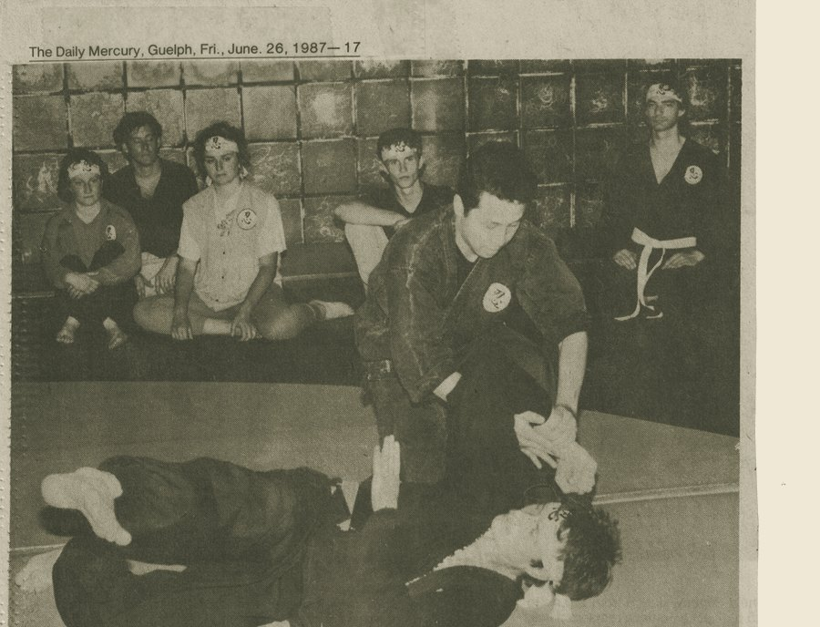
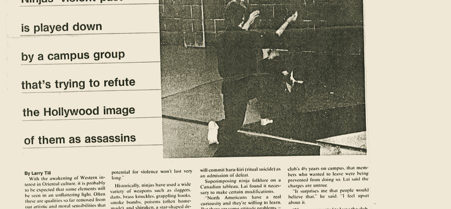
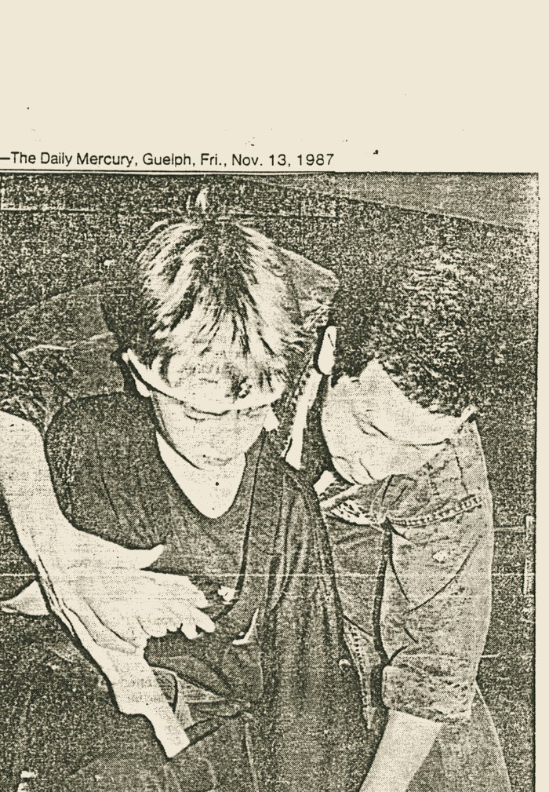
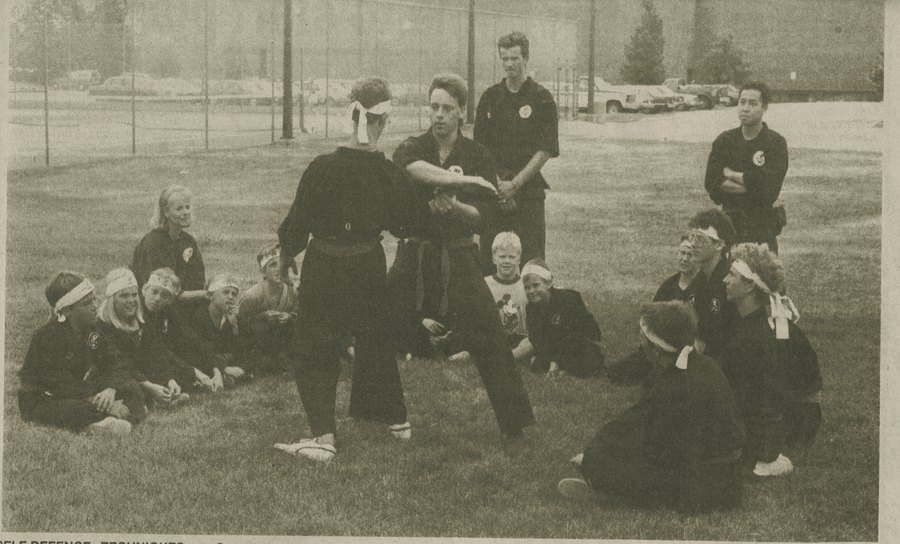
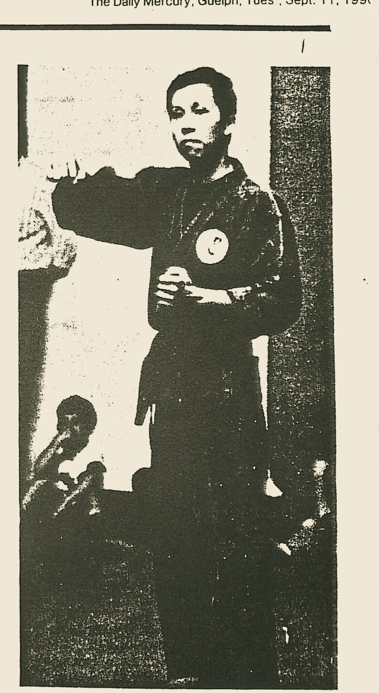
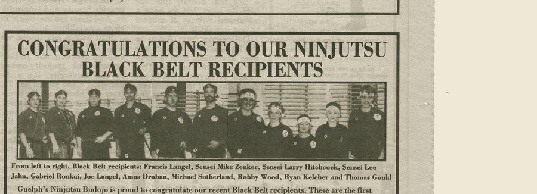
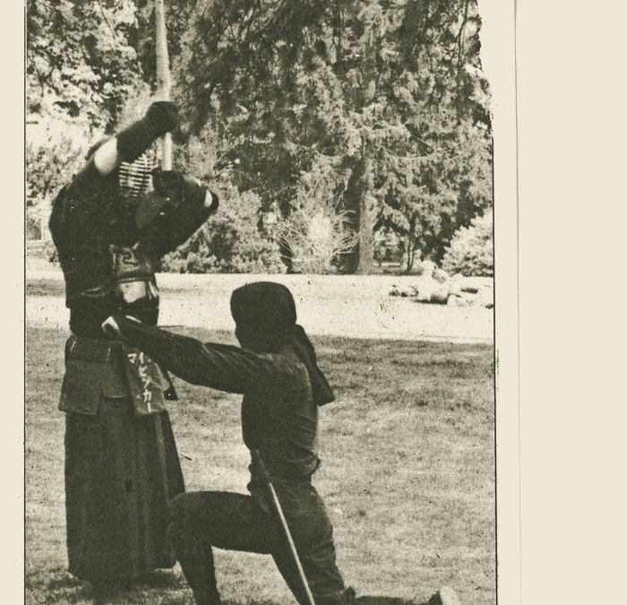
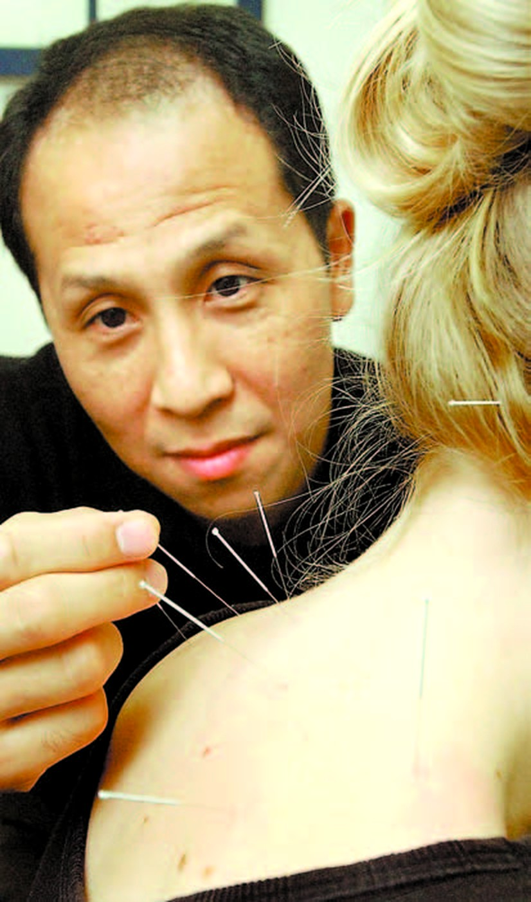

Press Archive
A chronological record of newspaper coverage of Lai's work, from the founding of his Ninjutsu program at the University of Guelph to his acupuncture practice today.
Coverage of a public demonstration by students of Canada Ninjutsu Inc., the club Sherman Lai had by then run at the University of Guelph for four years, describing the historical origins of ninjutsu and the club's defensive, non-aggressive training philosophy.

A feature by Larry Till examining how the University of Guelph ninjutsu club, under Sherman Lai's instruction, distinguished its modern, defense-oriented teaching from the historical and Hollywood image of ninjas. The piece notes the club's emphasis on restraint, its acceptance of women members — unusual for ninjutsu training at the time — and Lai's concern for correcting public misconceptions about the art.

Reporter Marg Petrushevsky profiled Lai's teaching method, in which students train for three years in redirecting an opponent's force before learning to apply force themselves — an approach designed to prevent overreaction and injury, particularly among younger students.

Coverage of the University of Guelph's Rainbow Camp, which integrated children with physical and intellectual disabilities into its programming, including a Ninjutsu day camp taught by Master Sherman Lai focused on street-proofing and non-violent self-defence rather than competition or belts.

A profile by Steve Hardy on Lai as the first ninjutsu grandmaster to have travelled and taught outside Asia, tracing his family's 27-generation lineage in the art, his parallel career in acupuncture, and his effort to educate the public against Hollywood's violent portrayal of ninjas.

Recognition of the first generation of students — ranging from age 10 to adult — to earn black belts through Guelph's Ninjutsu Budojo, founded by Lai, marking eight years of the school's operation in the city.

Coverage of an annual public demonstration by the university's ninjutsu club, describing the group's structure, its belt-ranking system, and Lai's account of ninjutsu as a form of "experienced medicine" passed through his family for 27 generations.

A report by Alexandra Paul on a University of Guelph women's and children's self-defence course developed from Lai's ninjutsu curriculum, emphasizing avoidance and de-escalation over fighting, developed in partnership with local police and rape crisis centre representatives.
A feature on chronic pain management in Guelph profiling Lai's acupuncture practice, citing University of Toronto research on acupuncture's role in stimulating the body's natural pain-relief and anti-inflammatory responses, alongside his account of treating chronic and post-surgical pain.
